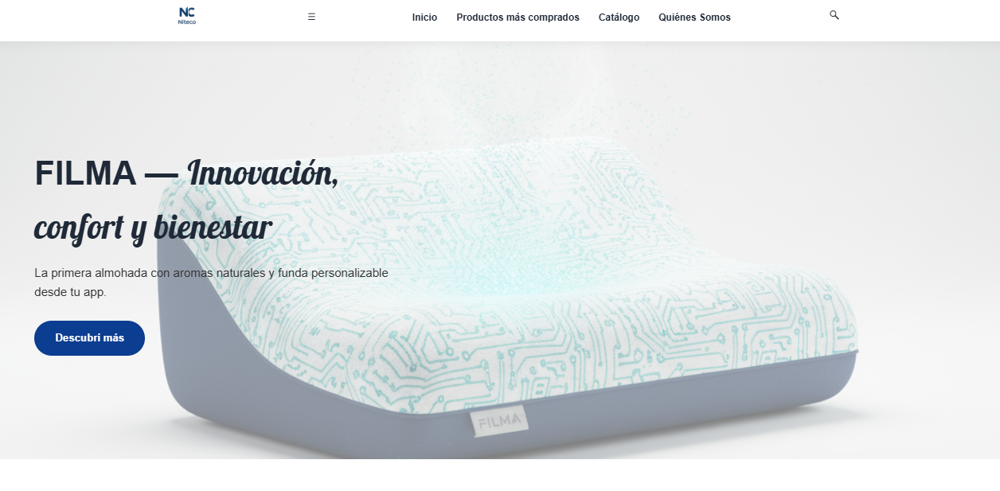
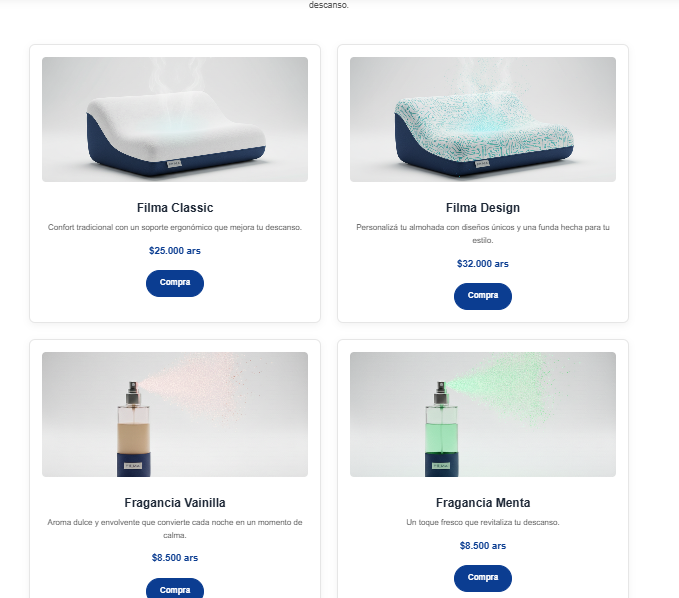
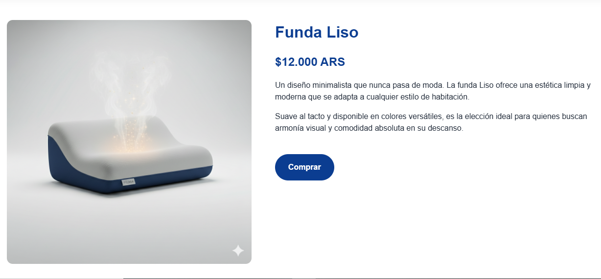

Pagina web empresa ficticia
Tecnologías: HTML, CSS
Consigna
Se debía desarrollar una página usando HTML y CSS actuando como cliente, a partir de la documentación armada por otro grupo de compañeros. Había que realizar entrevistas para que el cliente decida que estilo y colores deseaba usar. La entrega del proyecto simulaba llave en mano y se defendía frente al profesor y al cliente, que iba opinando y comentando que le parecía y si cumplía sus expectativas.
Capturas de la página

Recorte de la sección home que incluye el header con las secciones.

Recorte de la sección de catálogo.

Recorte de la sección del producto individual.
¿Cómo fue el desarrollo?
El desarrollo fue con un solo compañero gestionado mediante Kanban en Trello, con charlas y entrevistas a los clientes.
Tareas realizadas
- Armado de la navegación entre secciones.
- Diseño y armado del catálogo y cada producto individual.
- Implementación de diseño adaptativo según dispositivo.
Link al repositorio GitHub